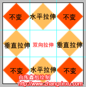
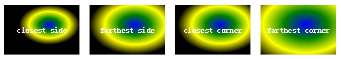

css手册
尽量保持精简，太简单，不常用的都不会收录在此。可参考： w3school api、 菜鸟 api、 mdn api、 css-library.css
word-wrap
允许长单词或url换行到下一行，请看f-wwbw
word-break
可以实现浏览器任意位置换行，请看f-wbba
text-overflow
文本溢出，超出省略号显示请看f-toe
white-space
如何处理元素内的空白，请看f-wsn、f-pre
vertical-align
- 请看f-vam
- 行内元素或表格单元格的垂直对齐方式，默认值是baseline，元素基线与父元素的基线对齐，等于0
- textarea就没有说明基线，故浏览器表现可能有差异
- 不建议使用百分数，那是相对行高，结果会不确定
- middle。元素的中心与父元素的基线加上小写x一半的高度值对齐
- text-top元素顶端与父元素的顶端对齐，text-bottom反之
box-sizing
修改元素盒子模型，请看f-bsbb
border-radius
设置边框圆角，即使不设置边框可生效（需要设置背景才能看见），配合box-shadow更好，典型应用请看.u-menu li:first-child a或.u-callout
overflow
超出边界的隐藏，典型应用请看.u-code2::before和.m-crumb
letter-spacing
增加或减小文字间距，初始是normal，等同于0，正负值都可以；典型应用请看.u-btn
word-spacing
增加或减小单词（中英文都以空格分割）的间距
border
可以画三角形，典型应用请看.u-btn .btnSel或.u-btn
border-width的典型应用请看.m-table-row th
user-select
典型应用请看.f-usn
cursor
典型应用请看.f-csp
键 linear-gradient
创建多种颜色的线性渐变图片，默认是180度，0度是从上往下，顺时针
简单用法linear-gradient(180deg, red 0%,blue 100%)，典型应用请看.u-btn:hover
渐变总长度是starting point开始，截止至ending point
-50%，从渐变总长度开始处往截止处逆方向50%（总长度的50%）开始
键 inline-block
《高级Web标准解决方案》中模糊的提到此属性可以清除浮动，我的应用请看.u-btns
margin
margin-left负值的应用请看.u-btns .u-btn:first-child（后者会覆盖前者）
居右可以这样实现：width:100px;margin-left:auto;
box-shadow
给边框添加阴影，默认颜色是元素字体颜色，典型应用请看.u-menu
:empty
没有任何子元素，空格都不行，典型应用请看.u-menu-gp li:empty
text-transform
控制文本的大小写，有全大写、全小写、首字母大写，典型应用请看.u-example
margin-bottom
典型应用请看.m-list2 > li::before
border-collapse
是否合并表格边框，其中collapse与border-radius冲突，经典应用请看表格圆角.m-table-rds
resize
是否可由用户调整元素尺寸，若希望可以调整元素尺寸，需设置元素属性overflow，典型应用请看textarea
flex
var
可以参考：CSS预编译语言——less初级入门、学习Less-看这篇就够了。对应的练习在little-phone/less文件夹中
CSS3 变形处理
- scale 缩放
- translate 移动 - 像素或百分比，第一个值是水平移动，第二个是垂直移动，正值是往右或往下移动
- rotate 旋转 - 如：transform: rotate(3600deg);
- matrix - 它基本上能让你将若干变形效果（scale、rotate、skew等等）组合成单个声明，需要理解矩阵需要了解相关数学知识
- transform-origin - 修改变形效果的起点，变形起点默认是中心点
- 未知：skew 沿x或y轴斜切 - 一个值则仅作用在x轴
- 参考：css3实现3D翻转功能（兼容ios）、CSS3 3D transform变换
transition
- 过渡，必须放在开始元素上。是四个属性的简写，语法：
transition: property duration timing-function delay。如transition:all 1s ease 0; - property，有三个值，none、all、property，多个属性用逗号分隔即可；all，理论上会应用到每个属性，但有的属性不支持过渡。
- transition-timing-function，过渡效果的速度曲线，因为过渡通常1s内，所以各种效果都差不多。
- transition-delay，延迟的时间，负数表示立刻开始。过渡包含多个属性，步调可以不一致，如：
transition-property:border,color,text-shadow;transition-duration: 1s,4s,2s;
浏览器私有前缀
只需引入js即可，请看prefixfree
local()
- $也是微软雅黑。@font-face{font-family:'$';src:local("Microsoft Yahei");}
- 微软雅黑变成宋体。@font-face {font-family: 'Microsoft Yahei'; src: local(SimSun); }
@font-face
- 嵌入网页字体
- font-family，定义字体名；
- src，调用字体文件，可以是本地，也可以是线上（跨域限制）。
src:local("aaa"),url("aaa.otf");没有安装aaa字体才去下载——测试失效，请看栗子 - font-style:italic/normal，斜体字体
- font-weight:400/500/normal/bold，不同字重对应不同字体
- unicode-range: U+201c, U+201d; 让特定字符或字符片段使用特定字体
- ie只支持eot格式，只能从.ttf(TrueType)文件生成.eot文件，.otf(OpenType)等其他格式必须先转为.ttf，在转为.eot。
- 忧的是：在某一个通用字体一统天下前，我们需要提供多种格式来兼容不同浏览器。喜的是给每种浏览器设置对应字体很简单。
- 用了几个，就会引入几个文件
- 未知：字蛛、个性化html web中文字体的几个解决方案
text-shadow
- 为文字添加阴影
text-shadow:20px 2px 1px #dad7d7右偏移20px，下偏移2px，模糊半径为1px（默认是0），最后一个是阴影颜色。阴影一般比较小，1像素或2像素最佳- 左上方阴影。如：text-shadow:-20px -2px 1px #dad7d7
- 多重阴影，后面的在下面。这里是5个阴影，text-shadow: 5px 5px 1px blue,5px 25px 0px blue,5px 45px 0px blue,5px 65px 0px blue,5px 85px 0px blue;
- 浮雕文字诀窍，不要水平，不要模糊，垂直方向1或2像素的白影，
text-shadow: 0 1px 0 hsla(0, 0%, 100%, 0.75)
text-align
- justify，两端对齐，不作用在最后一行
height
- 通常width:100%表示元素宽度是父元素的宽度，height:100%其实也类似，宽高都有超出父容器的局限性
border-image
- 在边框上绘制图形。这是一个简写属性
- border-image-source，类似background-image
- border-image-slice，裁剪位置
- 没有单位，专指像素。
- 支持百分值。假设边框图片400*300，那么20%表示裁剪图片的60px 80px 60px 80px的四边大小
- border-image-repeat，重复性。默认是strech(拉伸)、round(平铺)、repeat。
- 0个参数，border-image:url(border.png) 30% 40%; 等于 border-image:url(border.png) 30% 40% stretch stretch;
- 1个参数，表示水平和垂直方向均用此参数；2个参数，前者表示水平，后者表示垂直
- border-top-image和border-bottom-image受水平方向效果影响；border-left-image和border-right-image受垂直方向效果影响；
- 
- repeat直接从中间开始重复，所以边角会缺失；而round会调整图片使其正好在区域内显示，请看w3school
- 未知：border-image-outset:30 30;
float
- float:left/right可以将任意元素转为浮动元素
- 浮动元素宽度自适应，也就是宽度由内容决定，接着就可以设置宽和高
- 浮动元素向左或向右浮动，直到碰到其他浮动元素或父元素的边界(边界是width，不是padding或border)才停止。
- 浮动元素可以配合margin使用，不会出现元素尺寸超出容器的情况（absolute会哦），也不会出现垂直外边距合并。
- 浮动元素还可以配合relative使用
- 清除浮动可以使用clear或overflow，而clear的本质是
margin:value
position
top:100%相对父元素还是最近祖先的height？
z-index
- 设置了absolute、relative和fixed的就是设定了位置的元素，而设定了位置的元素都是原子显示
- 设定位置元素中设置数值z-index，就会得到一个本地自包含的堆叠上下文，元素中的所有后代元素都在这个上下文中显示——包括静态定位、浮动定位和设定位置的元素。
- 如果设置为auto，或给非设定位置元素指定z-index，则不会创建堆叠上下文。使用以下值会创建堆叠上下文：z-index:0、z-index:-1和z-index:9999;
- 每一个堆叠上下文都是原子显示，不允许任何祖先或相邻兄弟放在其子元素之间
- z-index不是全局，而是相对设置了数值z-index的最近定位祖先元素而定，请看栗子
- 设置为负值的设定位置元素位于静态定位元素和非设定位置浮动元素之下
background
- 多个属性的简写
- background-color在background-image下面
- 模式：
.background{background:#color url(demo.jpg) no-repeat center center;}，这几个属性顺序任意 - 多张图片做背景，比如:hover是从A图切成B图，第一次会存在闪烁
background-repeat
背景图像重复方式；常见值：repeat-x、repeat-y、no-repeat、repeat；space 和 round 当前没有被广泛支持的
background-image
- 常见值：url(demo.jpg) 或 none
- 多张背景图其实是从上到下叠加，如果第一张图很大且不透明，就会将下面的小图覆盖
- 未知：background-image:url(1.jpg),url(2.jpg);
background-attachment
背景图像是滚动还是固定，默认是scroll，fixed也好理解，local暂时不知
background-clip
- 设置背景图片或背景色是否延伸到边框下面。默认是border-box，延伸到边框下面，例如边框半透明的时候就可以看见。
background-Origin
指定background-position属性的相对位置。
background-size
- 设置背景图片大小；两个值，第一个是宽度，第二个是高度。
auto 100px以高度为比例缩放 100% 50%是容器的100%，高度是容器的50%- 只设置一个值，高度隐式为auto。
200px等同于200px auto - cover和contain都是等比缩放，前者会完全覆盖容器，但有可能会截掉部分，后者只是填充到容器，可能有留白；refer：mdn cover；注意：考虑的仅仅no-repeat；
background-position
50% 50%肯定是居中，翻译过来就是图片的中心点和容器的中心点重叠。
radial-gradient()
radial-gradient(red, green, blue) 等价于 radial-gradient(50% 50%,farthest-corner,red 0%, green 50%,blue 100%)，默认从中心为起点，渐变到最远角落停止，均匀渐变
③ 语法：background: radial-gradient(center, shape, size, start-color, ..., last-color)
④ shape渐变形状，有两个值，椭圆ellipse（默认）和圆心circle，如果是正方形，这两个值效果相同
⑤ size渐变大小，即渐变到哪里停止，有四个值，closest-side：最近边；farthest-side：最远边；closest-corner：最近角；farthest-corner：最远角

repeat-linear-gradient() 和 repeat-radial-gradient()
重复渐变。就是在加上前缀repeat-，后面语法与linear-gradient相同
list-style
三属性的简写属性，可以以任何顺序接受1、2或3个关键字
list-style-image
- 把图片设置为列表中的项目标记
- 不能精确的控制图片位置；背景可以精确控制图片位置
- 未知：w3school；有句话：list-style-image不能与list-style-type共存，且前者优先级较后者高
list-style-type
指定列表元素外观。disc(实心圆心)，默认；circle(空心圆点)；decimal(数字1、2...)；square(实心方块)；none(不显示)
list-style-position
- 标记项的位置，初始值outside。
- 规范用40px来放符号，但有的浏览器采用padding-left，有的采用margin-left
- 控制list-style-image和list-style-type的位置
多栏布局
column-width是列的宽度，但测试发现列宽不完全等于我设置的；column-count是列的个数；column-gap是列的间隙；column-rule是间隔样式
counter-increment
计数器值